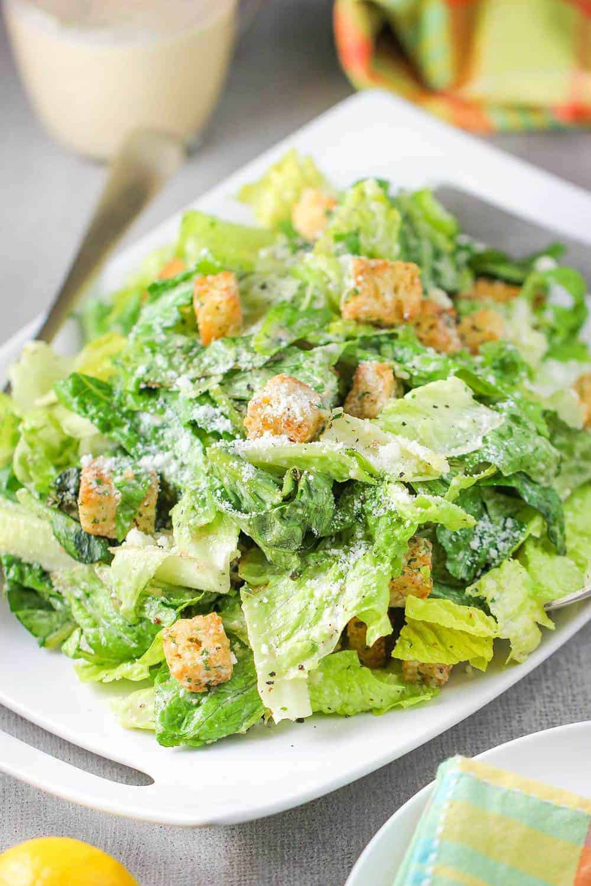

Ceasar Salad

Description
This really is the kind of ceasar salad that is best eaten right away as the vegetables
will become soggy. Luckily, it takes no more than 5 minutes to prep all the
vegetables.
CAN I ADD PROTEIN TO THIS SALAD?
Absolutely. Sliced cooked chicken, ham, tuna, smoked salmon and sliced boiled eggs
will all be delicious in this salad.
Ingredients
- 1 sliced tomato
- 1 sliced cucumber
- 1/2 sliced red onion
- 6 leaves lettuce
- 6 Slices cheddar cheese
- 8 ounces crunchy croutons
- 2 ounces grated parmeson cheese for decoration
Steps
- Chop up cucumber, red onion, and tomato into small cubes
- Slice lettuce into large strips
- Grate cheese using medium grate setting
- Throw it all into a large bowl and eat it up!